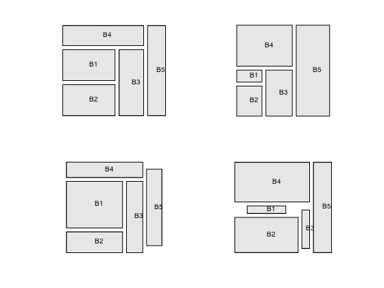

% Section 8.8.1/2, Example 8.7, Boyd & Vandenberghe "Convex Optimization" % Joelle Skaf - 11/13/05 % (a figure is generated) % % Rectangles aligned with the axes need to be place in the smallest % possible bounding box. No overlap is allowed. Each rectangle to be placed % can be reconfigured, within some limits. % In the current problem, 5 rectangles are to be place. We are given 2 % acyclic graphs H and V (for horizontal and vertical) that specify the % relative positioning constraints of those rectangles. % We are also given minimal areas for the rectangles. % Input data n = 5; % for each entry i, X_tree(i) = parent(i) H_tree = [0 0 1 0 0;... 0 0 1 0 0;... 0 0 0 0 1;... 0 0 0 0 1;... 0 0 0 0 0]; V_tree = [0 0 0 1 0;... 1 0 0 0 0;... 0 0 0 1 0;... 0 0 0 0 0;... 0 0 0 0 0]; Amin = [100 100 100 100 100; ... 20 50 80 150 200; ... 180 80 80 80 80; ... 20 150 20 200 110]; rho = 1; % minimum spacing constraints % solving the problem by calling the general FLOORPLAN routine for iter = 1:4 A = Amin(iter,:); [W, H, w, h, x, y] = floorplan(H_tree, V_tree, rho, A, 1/5*ones(n,1), 5*ones(n,1)); % Plotting subplot(2,2,iter) for i=1:n fill([x(i); x(i)+w(i); x(i)+w(i); x(i)],[y(i);y(i);y(i)+h(i);y(i)+h(i)],0.90*[1 1 1]); hold on; text(x(i)+w(i)/2, y(i)+h(i)/2,['B',int2str(i)]); end axis([0 W 0 H]); axis equal; axis off; end
